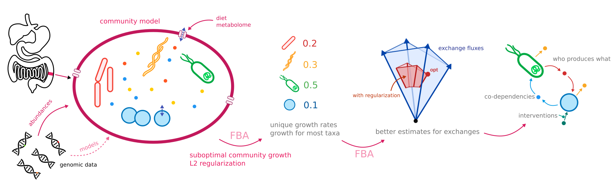

How does MICOM model communities¶

There are many frameworks for microbial modeling and all make their own specific assumptions in order to fit microbial communities into a mathematical representation. This is an overview about the assumptions MICOM makes and how it translates the community into mathematical terms. As it happens all formulations here are similar to formulation used in the OptCom and SteadyCom papers.
In general MICOM makes several assumptions to infer growth rates and fluxes in a microbial community. The most important ones being:
Growth rates and relative abundances in the community are in steady state.
Most taxa that are present in a biological sample should be able to grow (have a growth rate >0).
Relative DNA abundances can be used as a proxy for dry weight taxa abundances.
Different to SteadyCom, MICOM does not assume that all taxa have the same growth rate and allows for taxa-specific dilution rates.
Exchanges and community growth rate¶
One of the things that can easily overlooked when using FBA for communities is that growth rates and fluxes are usually given in unit mass/(abundance * time), for instance mmmol/(gDW * h). Thus, all fluxes are relative to the abundance of the single bacteria they describe. However, in a community all bacteria might have different abundances so we have to take care to balance fluxes. For instance let us take a system containing only one bacteria \(i\) which imports metabolite X from the external medium. In the medium metabolite X enters the system with an unscaled flux \(v^m_x\) which has units mmmol/h. Within the bacteria the metabolite is consumed with the sclaed flux \(v^i_x\) which has units mmol/(gDW * h). \(v^i_x\) described the flux that can be realized by 1 gDW of the respective bacteria. However, the abundance for bacteria \(i\), \(b_i\) (in gDW), might be different than that. In order to have balanced fluxes we have to enforce that \(v^m_x = b_i \cdot v^i_x\) (overall influx equals overall consumption). If many bacteria import the respective metabolite we thus need to enforce
The actual abundances \(b_i\) are usually not known, but we can divide the equation by the total bacterial abundance \(B = \sum_i b_i\) and obtain
\(\tilde{v}^m_x\) is now a scaled flux in the medium relative to the overall bacterial biomass in the community. The relative abundances \(\tilde{b}_i = b_i/B\) can be taken from metagenomic studies such as 16S rRNA quantities. This is how MICOM uses abundance data.
In a similar manner the unscaled community growth rate (total biomass production) is given by
and dividing by the total biomass \(B\) yields
where \(\tilde{v}_{biomass}\) now again is a scaled biomass flux relative to a total community biomass of 1 gDW. In order to adjust growth rate predictions from MICOM to your sample you would have to divide those growth rates by the overall weight of microbiota in your sample. For instance a recent publication estimates that an average human has 200g of bacteria in the gut.
Steady states in the community¶
MICOM has be designed with the gut microbiota in mind. One of the major problems when trying to apply flux balance analysis (FBA) to microbial community data especially metagenomic data are paradoxical assumptions about community growth. Flux balance analysis usually assumes a maximization of the growth rate, or at least the realization of one particular growth rate \(\mu\), however metagenomic experiments usually only quantify the microbial compositions at one particular time point,
assuming that the microbial abundance does not change. Those two assumptions are not compatible per sé. If members of the community grow with a constant rate they will accumulate exponentially over time, however we know that this is not the case in systems as the intestine (otherwise we would probably explode due to an overpopulation of bacteria and fungi). This disagreement can be aleviated by accounting for dilution of the microbiota. For instance in the gut bacteria are constantly removed in
small amounts by death (when arriving at their specific life span) and in larger amounts by defecation. The sum of all processes removing bacteria from the system is what we call dilution here. In MICOM we assume the follwing about the dilution process:
It is relative to the bacterial abundance (the more you have in your system the more is removed by dilution)
It may be specific to the bacterial strain
It may specific to the sample
is known to be true for the gut microbiome since we know that a higher concentration of a bacteria in the gut is usually associated with a higher concentration in stool samples (which is the major dilution contributor). This is similar to SteadyCom but does not assume that the dilution rate is constant across all taxa. (2) is based on the observation that bacteria may have distinct spatial arrangements which make it easier or hader to be diluted. (3) is based on the assumption that the respective systems may be different (no gut is the same :D), however it is one of the assumptions we are currently trying to validate. As a consequence we assume that the abundance for bacteria \(i\), \(b_i\) occurs with a growth rate \(\mu_i\) and balances with an arbitrary dilution process \(d_i(t) = d_i(b_i)\) as
As we can see absolute bacterial abundance can only be in steady state if growth and dilution are balanced. Additionally one could also formulate the problem in terms of relative concentrations to the total community abundance \(B = \sum_i b_i\) using the quotient rule, which yields:
As one can see, this equation has a steady state if for all i \(\mu_i - \frac{d_i(t)}{B\cdot \tilde{b}_i} = C\) for any constant C:
\begin{align} \frac{d \tilde{b}_i}{dt} &= C\tilde{b}_i - \tilde{b}_i\sum_k C \tilde{b}_k\\ & = \tilde{b}_i\left(C - C\cdot 1) \right) = 0 \end{align}
However, in this the total abundance \(B\) would increase indefinitely in time. In particular it holds that \(\frac{dB}{dt} = C\).
Okay, what can we conclude from that? Most importantly that any abundance \(b_i\) or relative abundance \(\tilde{b}_i\) can be a valid steady state abundance as long as the respective growth and dilution rates are balanced. This means there is an infinite amount of growth rates that yield a steady state (growth rates can not be uniquely identified from abundance alone).
Cooperative tradeoff¶
Instead of solving a multi-objective problem MICOM achieves a global optimum by a two step approach called cooperative tradeoff. In simple terms:
obtain the maximum community growth rate \(\mu_c^*\) by classic FBA
choose a tradeoff term \(\alpha\) in \([0, 1]\) and constrain the community growth rate such that \(\mu_c \geq \alpha\cdot\mu_c^*\)
minimize the regularization term \(\sum_i \mu_i^2\) which distributes growth across all individuals in the community
This method is much faster than alternative methods. Also it results in solution where each individual growth is simultaneously at its maximum rate without diminishing the growth rate of other individuals (thus the term “cooperative”). In consequence, cooperative tradeoff results in an optimum which is conceptually very similar to what OptCom does but with a simpler method. In the absence of constraints MICOM yields growth rate estimates that are correlated with abundance within a single sample. This is not an assumption made a priori but a consequence of the optimization strategy.
Numerical stability and solvers¶
MICOM support all solver implemented in optlang (GLPK, CPLEX and Gurobi). However, since MICOM models can become quite large (50k - 500k variables) many solvers have numerical issues when solving the corresponding LP and QP problems. For realistic communities modeled on the genus, species or strain level we thus recommend using a solver that implements numerically stable interior point methods, currently only Cplex and Gurobi. Both have academic licenses available. In our experience the simpex methods in GLPK still work well up to 10,000 variables, but get gradually slower towards 50,000 variables and being too slow to be usable beyond that.
Nevertheless, even the commercial solvers can usaully not control numerical issues in the quadratic interior point methods well. In fact for larger models they always never return an optimal solution. To avoid those numerical issues MICOM employs a crossover strategy where it will perform as many iterations in the quadratic interior point method as possible to get a candidate solution for the individual growth rates \(\mu_i^{ca}\), followed by solving a linear programming problem to find a feasible solution close to the candidates:
[ ]: